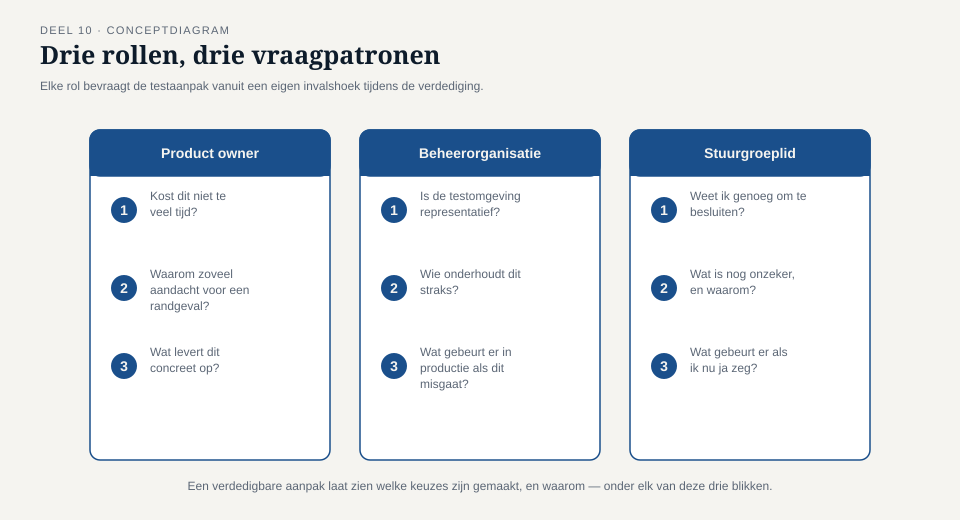

Deel 10 — Examentraining en capstone
Reader · Ductus-cursus Testen en Kwaliteitsborging · niveau 1 (fundament) · deel 10 van 30
Dit deel sluit geen nieuwe bevinding — het brengt T1 tot en met T8 samen in één opdracht en sluit niveau 1 af.
Leerdoelen
Na dit deel kun je:
- de examenstof van CTFL v4.0 in samenhang toepassen op een gegeven scenario;
- een volledige, risicogebaseerde testaanpak opstellen voor een afgebakend deelsysteem;
- een besluitvormend testrapport schrijven dat aantoont welke van de acht bevindingen T1–T8 door je eigen aanpak worden voorkomen;
- je testaanpak mondeling verdedigen tegen kritische vragen vanuit drie verschillende rollen;
- onderscheid maken tussen een verdedigbare, beargumenteerde keuze en een schijnbaar volledige maar oppervlakkige aanpak;
- reflecteren op je eigen groei ten opzichte van je antwoorden in deel 1.
Studielast: dit deel beslaat een volledig dagdeel examentraining plus een volledig dagdeel capstone (twee dagdelen totaal), met de voorbereiding als omvangrijke zelfstudieopdracht vooraf.
1. Terug naar het begin
In deel 1 kreeg je de vraag: "Zou jij dit systeem live laten gaan?" De meeste groepen zeiden aanvankelijk ja, of ja-met-een-slag-om-de-arm. Aan het eind van dat dagdeel was dat gekanteld.
Tien delen later is de vraag niet meer of je "ja" of "nee" zou zeggen. De vraag is of je kunt uitleggen, met een volledige, verdedigbare aanpak, wélke informatie een ander in staat stelt die vraag zelf verantwoord te beantwoorden. Dat is precies de rolgrens waarmee deel 1 begon — nu niet meer als uitgangspunt om te leren, maar als vaardigheid om te tonen.
2. Ochtend: examentraining
2.1 Opzet
Een oefenexamen van 40 vragen, opgebouwd in de stijl van het CTFL v4.0-examen: 65% als slaggrens, een mix van K1-, K2- en K3-vragen, met scenario's die vergelijkbaar zijn met — maar niet identiek aan — de oefentoetsen uit deel 1 tot en met 9. De vragenbank is eigen werk van Ductus, geschreven in examenstijl, en bevat geen letterlijke examenvragen.
2.2 Examenstrategie
- Lees de vraag twee keer vóór je de antwoordopties bekijkt — veel foutieve antwoorden ontstaan doordat een optie plausibel klinkt vóórdat de vraag scherp is gelezen.
- Elimineer eerst de zeker foute opties. Bij vier opties is dit vaak sneller dan direct het juiste antwoord zoeken.
- Let op signaalwoorden: "altijd", "nooit", "uitsluitend" zijn vaak (niet altijd) een teken van een onjuiste optie; deze cursus heeft consequent laten zien dat de werkelijkheid zelden absoluut is.
- De meest voorkomende examenfouten uit deze cursus, ter herinnering: principe 1 versus 7 (deel 1), testconditie versus testgeval (deel 2), confirmatie versus regressie (deel 3), walkthrough versus technische review (deel 4), ontbrekende ongeldige equivalentieklassen (deel 5), statement- versus beslissingsdekking (deel 6), productrisico versus projectrisico (deel 7), ernst versus prioriteit (deel 8), entry- versus exitcriterium (deel 9).
2.3 Nabespreking
Na het oefenexamen worden de vragen klassikaal doorgenomen, met nadruk op de vragen die het vaakst fout werden beantwoord. Dit is een goed moment om terug te bladeren naar het specifieke deel waar de stof vandaan komt.
3. Middag: de capstone
3.1 De opdracht
Je krijgt een deelsysteem van WGP 2.0 toegewezen: de verwerking van deeltijdwijzigingen, inclusief de doorzending naar de kernadministratie. Dit deelsysteem is bewust gekozen omdat het meerdere bevindingen uit T1–T8 raakt: het bevat een datumgrens (T6), een ketenoverdracht (T7, T5) en was onderdeel van de oorspronkelijke onderdekking (T2).
Je taak, individueel voor te bereiden en in een groep van drie te verdedigen:
- Een testaanpak (maximaal twee A4) met:
- een korte productrisicoanalyse (deel 7) voor dit deelsysteem, met minstens vier risico-items;
- per risico-item: gekozen technieken (deel 5 en 6) en diepgang, verantwoord vanuit het risiconiveau;
- entry- en exitcriteria (deel 9), risicogebaseerd geformuleerd;
- expliciete eisen aan testomgeving en testdata (deel 8).
- Een testrapport (maximaal één A4) dat je zou hebben geschreven ná uitvoering — gebruik makend van fictieve maar plausibele uitkomsten die je zelf verzint, volgens de structuur uit deel 9, §3.2.
- Een bevindingenmatrix: voor elk van de acht bevindingen T1–T8, een expliciete zin die aantoont hoe jouw aanpak deze zou hebben voorkomen of tijdig aan het licht gebracht — of, waar dat niet het geval is, een eerlijke erkenning daarvan met argumentatie waarom dat een aanvaardbare keuze is.
3.2 De verdediging
Elke groep verdedigt zijn aanpak in twintig minuten voor drie rollen, gespeeld door medecursisten of de docent:
- Product owner (Marijke de Groot-achtig) — bevraagt vanuit de vraag: kost dit niet te veel tijd voor wat het oplevert? Waarom zoveel aandacht voor een datumgrens die zelden voorkomt?
- Beheerorganisatie (Astrid Poelman-achtig) — bevraagt vanuit de vraag: is de testomgeving representatief, en wie gaat dit straks onderhouden?
- Stuurgroeplid (Rob Hendriks-achtig) — bevraagt vanuit de vraag: als ik dit rapport krijg, weet ik dan genoeg om een verantwoord besluit te nemen?

3.3 Wat wordt beoordeeld
Niet: of de aanpak "compleet" is in de zin van maximale diepgang overal. Wél:
- of elke keuze verdedigbaar is vanuit risico (deel 7), niet vanuit gewoonte;
- of de bevindingenmatrix eerlijk is — een aanpak die beweert alle acht bevindingen te voorkomen zonder dat overtuigend te kunnen uitleggen, scoort lager dan een aanpak die eerlijk erkent twee bevindingen bewust minder diep af te dekken, met een goede reden;
- of de verdediging standhoudt onder kritische vragen, in plaats van bij de eerste tegenvraag terug te vallen op "dat hebben we altijd zo gedaan".
Kernzin — Een aanpak die alles even grondig wil doen, heeft geen keuzes gemaakt. Een verdedigbare aanpak laat zien wélke keuzes zijn gemaakt, en waarom.
4. Waarom dit deelsysteem, en niet WGP 2.0 in zijn geheel
Deeltijdwijzigingen zijn bewust een afgebakend, behapbaar deelsysteem — groot genoeg om alle acht bevindingen te kunnen raken, klein genoeg om in de beschikbare tijd volledig doordacht te worden. Deze beperking is zelf een toepassing van les uit deel 7: een productrisicoanalyse voor een heel systeem in twintig minuten is oppervlakkig; een grondige analyse van een afgebakend, risicovol deel is waardevoller dan een oppervlakkige van het geheel.
5. TMAP-lens
Voor deze capstone geen apart TMAP-blok — in plaats daarvan een expliciete keuzevraag die in de verdediging aan bod mag komen: zou je deze testaanpak formuleren als een klassiek testplan-document, of als een set bouwstenen die het team gaandeweg invult? Beide zijn verdedigbaar; de docent beoordeelt niet welke stijl gekozen wordt, maar of de argumentatie voor die keuze standhoudt.
6. Naar niveau 2
Wie hier slaagt, heeft niveau 1 volledig doorlopen: van "waarom testen we" tot een zelfstandig verdedigbare, risicogebaseerde testaanpak. Niveau 2 (Professional) bouwt dit uit naar programmaschaal: het Programma Mutatieplatform, met meerdere teams, ketenpartners en een releasetempo dat niet langer toestaat om, zoals in deze capstone, twee dagdelen aan één deelsysteem te besteden. De discipline die je hier hebt geoefend — risico eerst, dan pas techniek en diepgang — blijft het fundament.
Kernbegrippen
(Dit deel introduceert geen nieuwe kernbegrippen; het integreert alle begrippen uit deel 1 t/m 9.)
Samenvatting in vijf zinnen
- Niveau 1 begon met de vraag "zou jij dit live laten gaan?" en eindigt met de vaardigheid om te tonen welke informatie een ander nodig heeft om die vraag zelf te beantwoorden.
- Een volledige, risicogebaseerde testaanpak begint bij een productrisicoanalyse, niet bij een lijst technieken.
- Een aanpak die alles even grondig wil doen, heeft geen keuzes gemaakt; een verdedigbare aanpak laat zien wélke keuzes zijn gemaakt en waarom.
- De bevindingenmatrix vraagt om eerlijkheid: een bewust aanvaard restrisico, goed beargumenteerd, is sterker dan een ongefundeerde claim van volledigheid.
- De acht bevindingen T1–T8 waren nooit acht losse incidenten, maar telkens dezelfde onderliggende fout — kennis die geen vorm kreeg om het testproces te sturen — in een andere gedaante.